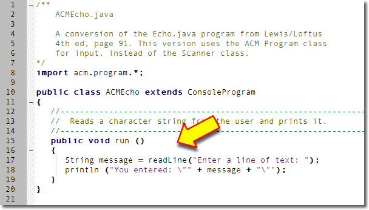
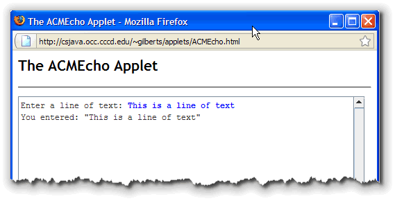
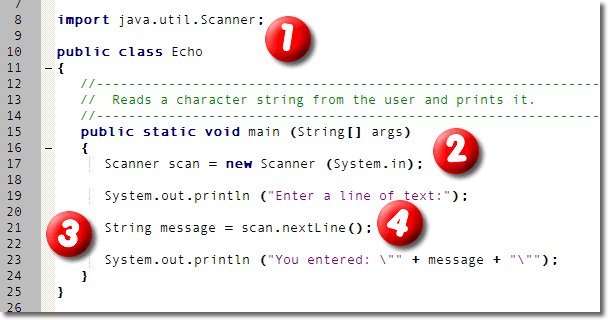
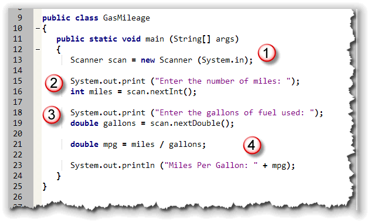
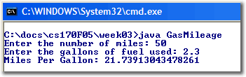
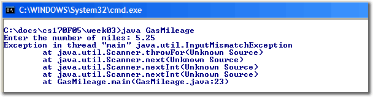

While you can use assignment to place values into your variables, often, you won't know what value should be used until the program actually runs. Instead of you, the programmer, supplying the values, you'll need to ask the user for some input, and use that input to initialize your variables. That's the first step towards creating interactive programs.
 Getting input from the user can be done in several different
ways:
Getting input from the user can be done in several different
ways:
- you can use a text-field and retreive the information when the user types in some data and presses a button (or the Enter key).
- you can use an "input widget" like a drop-down list, a checkbox, or a radio button.
- you can use a dialog box that asks for some text and returns the text to your program when the user clicks "OK".
- you can read console input from the keyboard, and use that input to initialize your variables.
We'll use most of these techniques throughout this class.
For right now, we'll look at the process of reading user
input from the console and dialog boxes, using the ACM
program classes. In the second half of the lesson, we'll look
at reading console input from the system console by using
the Scanner class that was added in Java 5.
ConsoleProgram Input
Here's probably the simplest possible program named ACMEcho based on
the input methods from the ConsoleProgram class:

To read input from the user, the program simply calls the
ConsoleProgram's readLine() method. When you
call readLine() the program stops running and waits for the
user to type in a line of text on the console.
The readLine() method is actually a function; that is,
it is a method that doesn't simply do something, but a method that returns
a value to the caller. When a function returns a value, you have to then
save the value in a variable. Here, I've created a String
variable named message to store the value returned from the
readLine() function.
String message = readLine("Enter a line of text: ");
After the input line has run, the variable message will contain
the line of text entered by the user. The second line of code in
ACMEcho uses concatenation, along with two escape characters,
to print or echo whatever the user originally typed.
println("You entered: \"" + message + "\"");
There are actually two versions of the readLine()
method. The version I've used here allows you to pass a String
parameter which the program displays to the user before waiting for input.
This is called a "prompt".
You can
click this link to run the applet in your browser.

Scanner Input
In traditional console programs (those that make use of the
system console), the standard input stream, System.in
can be used to read from the console keyboard, just like
System.out. can be used for console output.
Unfortunately, there are two difficulties with this:
- the
System.inobject only knows how to read raw bytes, not strings or numbers. - because it is possible that an input error could occur,
Java requires code using
System.in.read()to explicitly handle any exceptions that can occur, something that is a little too complicated for the first few weeks of class.
To make up for these deficiencies in the standard input stream,
the Scanner class was added to Java 5 to make
reading data from the keyboard easier than in previous
versions of Java. The Scanner class uses of
the standard input stream, System.in, but
allows you to read strings and numbers without complications.
To use the Scanner class in your program, you
have to follow four steps, shown in Echo.java, a
program very similar to ACMEcho shown earlier:

- First, you have to make the
Scannerclass "available" to your program. The class isn't part of the java.lang package, so you have toimportit just like we did for theacm.program.*package when creating a ConsoleProgram. TheScannerclass is in thejava.utilpackage. - Next, you have to create a
Scannervariable, (calledscanin the example), and initialize it by calling its constructor. Again, your book doesn't really cover what this means until the next chapter, but I've explained it a bit earlier in this week's lessons. - When we receive input from the user, we'll need to
store it somewhere in memory. As you may have guessed, that means
we'll need to create a variable. Line 21 creates the
Stringvariable namedmessageand uses the assignment operator to give it a value. - Instead of using a
Stringliteral on the right-hand-side of the assignment operator, though, the Echo program asks theScannerobject we've created to "read" a line of text, from the keyboard in this case, using theScanner nextLine()method. Note that the name of the input method is different than the ACMreadLine()method.
When line 21 is executed,, the program stops and waits for the user to
type in some text and then press the Enter key. (The technical
term for stopping like this is called blocking.) Once
the user presses Enter, the information supplied at the keyboard
is retrieved, and stored in the messsage variable.
The Echo program also illustrates an important
concept when working with console I/O: let the user know what
kind of information they should enter. The println()
statement on line 19 is known as a prompt.
Because this is a standard console program, you cannot run it as an applet. If you want to see it running, type it into Eclipse, and run it as an application. Also, even though this program does the same thing as ACMEcho, it's several lines longer.
Numeric Input
When a user types the number 123 from the keyboard, what is
actually stored in memory are the three binary values
0000-0000 0011-0010
0000-0000 0011-0011
char values
'1', '2', and '3', stored in a Java
String object.
If the user is entering values intended to be used in a
calculation, (and not a street address, for instance), those
three char values will have to be converted from
text to the binary 32-bit integer 123, shown here:
This process—turning human-readable text, input from the keyboard
or a file, into binary numbers, (and its alter-ego, turning
binary numbers into human-readable text), is the job of
conversion. In later lessons, you'll learn how to
use Java's wrapper classes to parse user input
and convert that input into integers, real numbers, and
even dates and times. For right now, though, we'll let
the Scanner and ConsoleProgram
classes do the work for us.
Scanner Numeric Input
In the previous section, you saw how to use the Java 5
Scanner class to read a line of text from
the user, (calling its nextLine() method),
and then store the line of text in a String
variable.
The process for retrieving an int,
or double is almost identical:
- Construct a
Scannervariable, using theScannerconstructor, passingSystem.inas a parameter to the constructor. - Call the appropriate numeric input method,
nextInt()ornextDouble(), and store the returned value in your variable.
Scanner Example
Here's an example named GasMileage.java that uses both of these:

- The
Scannervariable is constructed to read input from the keyboard. - The user is prompted to enter the number of miles,
and then, on the next line, the
intvariablemilesis defined and theScanner nextInt()method is called to read an integer from the keyboard. The characters that the user types in are converted to anint, and placed in the variablemiles. - In the next section, the user is prompted to enter the
gallons of fuel used. On the next line, the
doublevariablegallonsis defined and theScanner nextDouble()method is used to read a real number from the keyboard. The characters that the user types in are converted to adouble, and placed in the variablegallons. - Finally, in the last section, a third variable, the
doublenamedmgpis defined. It is assigned a value using the expressionmiles / gallons. Once the miles per gallon is calculated and stored in a variable, the result is printed using theprintln()method.

If you run the program and type in 50 for the number of miles and 2.3, you'll see that the program accurately calculates your gas mileage, as shown in the screenshot to the right.
Input Errors
What happens, though, if the user types in 5.25
for the number of miles, or even "five"? In that case,
the Scanner class notices the error,
prints an error message, and terminates the program,
like this:

This is called a runtime error, because it's detected when your program runs, rather than when you compile it. (After all, the compiler has no way of telling what the user will type in when the program runs.)
Because of the mechanism used to generate runtime errors in Java, this kind of event is also called throwing an exception. You'll learn about Java's different kinds of exceptions in Chapter 11 of your textbook. There, you'll also learn how to catch an exception, and perhaps give the user a second chance to correct their input.
For right now, though, your
best defense is to make your instructions (prompts) as explicit
as possible. Instead of saying "Enter the number of miles:", you
could write "Enter miles as a whole number (25) :" or something
similar. Or, you could use the ACM classes which handle errors
a little better than the Scanner class.
ACM Numeric Input
The ACM ConsoleProgram class also has a number of
numeric input methods. While the Scanner methods are
nextInt() and nextDouble(), the equivalent
ACM methods are called readInt() and readDouble().
Here's the ACM version of the gas mileage calculator, named
ACMGasMileage.java. You can see the use of the readInt()
method on line 21 and the readDouble() method on line 23:

This program has a couple of advantages over the non-ACM version.
- It's a little smaller.
- It runs on pre-Java 5 versions of Java
- You can run it as an applet, so you can post it on the Web so it's easy for others to use.

The biggest advantage, though, is that the ACM libraries automatically intercept input errors, and allow the user to correct their mistakes, as you can see here.
Dialog Input and Output
I want to explore one last kind of input and output: that based on
graphical dialog boxes like the picture shown at the top
of this program. On page 69 of your textbook, Advanced Topic 4.7
shows you how to use the JOptionPane class to add
a more modern input-output style to your programs.
The only problem is that the code is considerably more complex:
- You can only get
Stringinput. - If you need to read
an
intordoubleyou need to read the input into a temporaryStringvariable first and then use a wrapper class to convert theStringto the numeric type. - You have to explicitly exit your program by using the
System.exit()method.
 Fortunately, there's a much easier way to create a dialog-based program
by using the ACM DialogProgram class. In fact, all we have to do
to convert ACMGasMileage to the dialog version is to replace the
phrase
Fortunately, there's a much easier way to create a dialog-based program
by using the ACM DialogProgram class. In fact, all we have to do
to convert ACMGasMileage to the dialog version is to replace the
phrase extends ConsoleProgram with the equivalent
extends DialogProgram.
Like it's console-based cousin, you can run this dialog-based version of the ACM program as an applet on the Web, although it isn't quite as seamless as the console version.
Coming Up Next ...
That's it for this week. In this lesson you learned how to read input,
opening up the world of interactive applications.
To do this, you made use of the Scanner class,
part of the Java 5 class libraries, and the ConsoleProgram
class, which is part of the ACM class libraries.
To finish up this week, complete the Unit 2 quiz as well as this week's homework assignments.